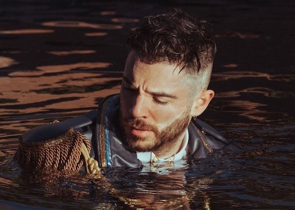
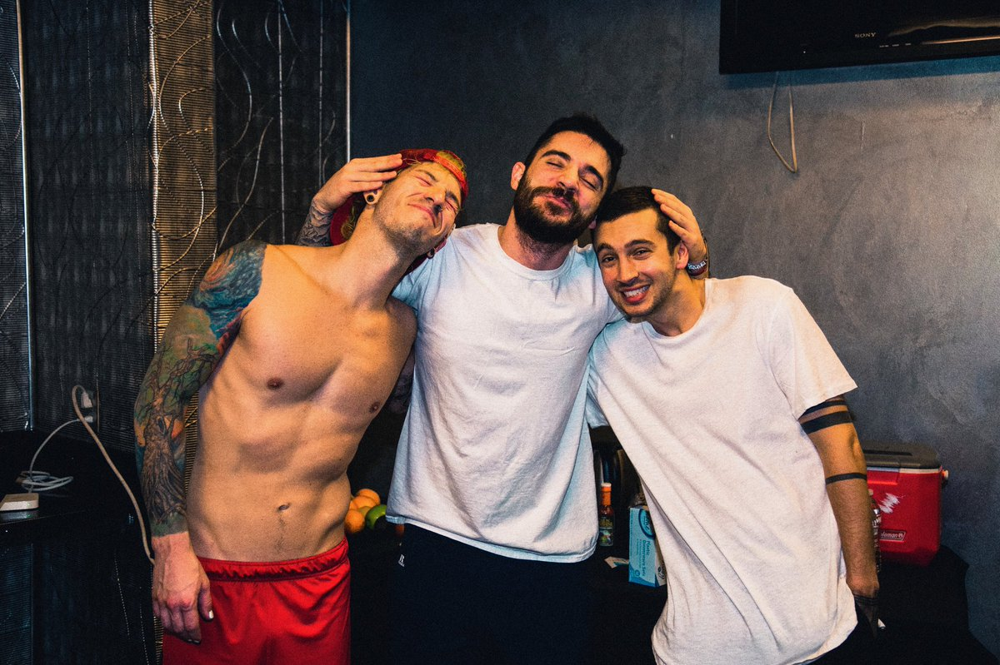
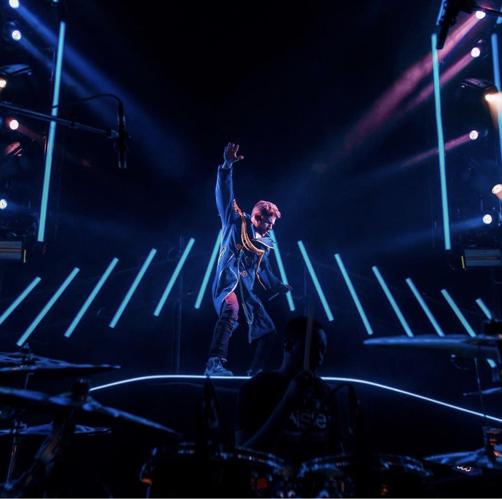
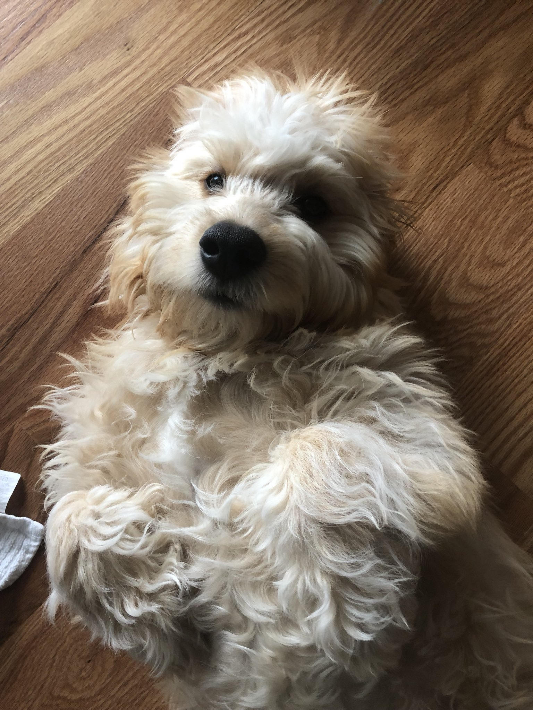
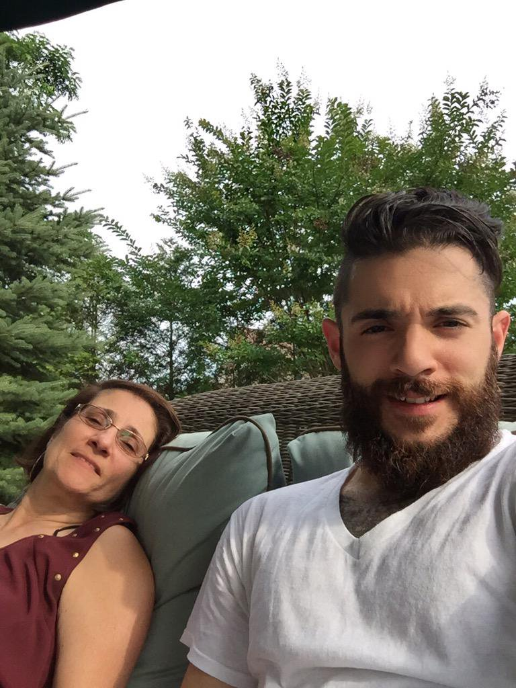
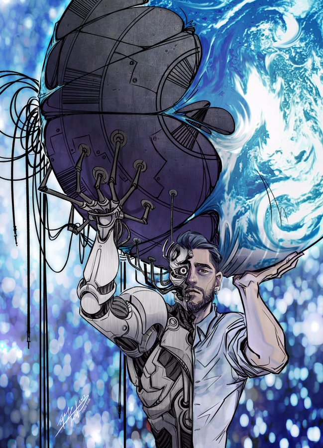
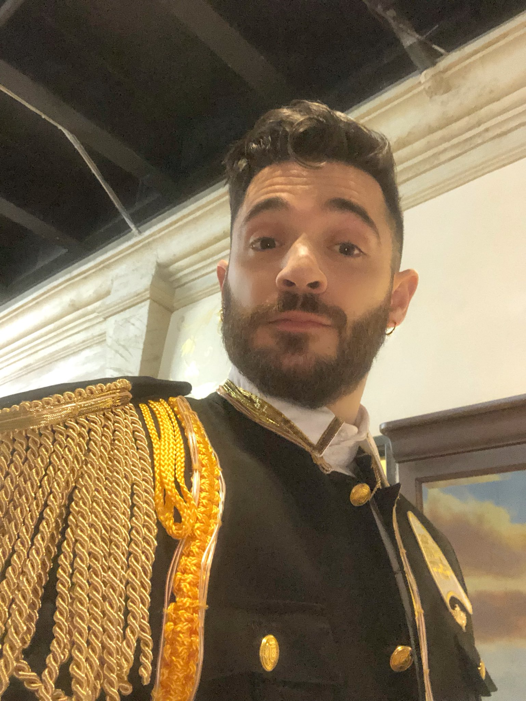

Photo Gallery



Jon bellion during the shooting of the "Stupid Deep" music video
Photograph of Jon Bellion with band members Josh Dun(left) and Tyler Joseph (right) from the band "twenty one pilots" that he was an opening act for in 2017.
Jon hyping the crowd at a performance during his "Glory Sound Prep Tour".
This is Jon Bellion's dog Randy.
Jon Bellion with his mom, as Jon captioned the photo "Momma Bellion".
Jon went to Pixar Animation Studios and was given a personal tour. At the end of the tour this artwork was given to him by one of the pixar animators.
Selfie while on tour (for The Glory Sound Prep Tour).
Jon Bellion at his soundboard during a performance.